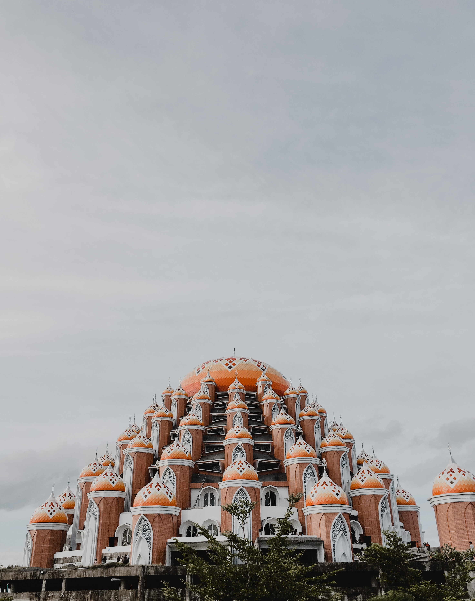
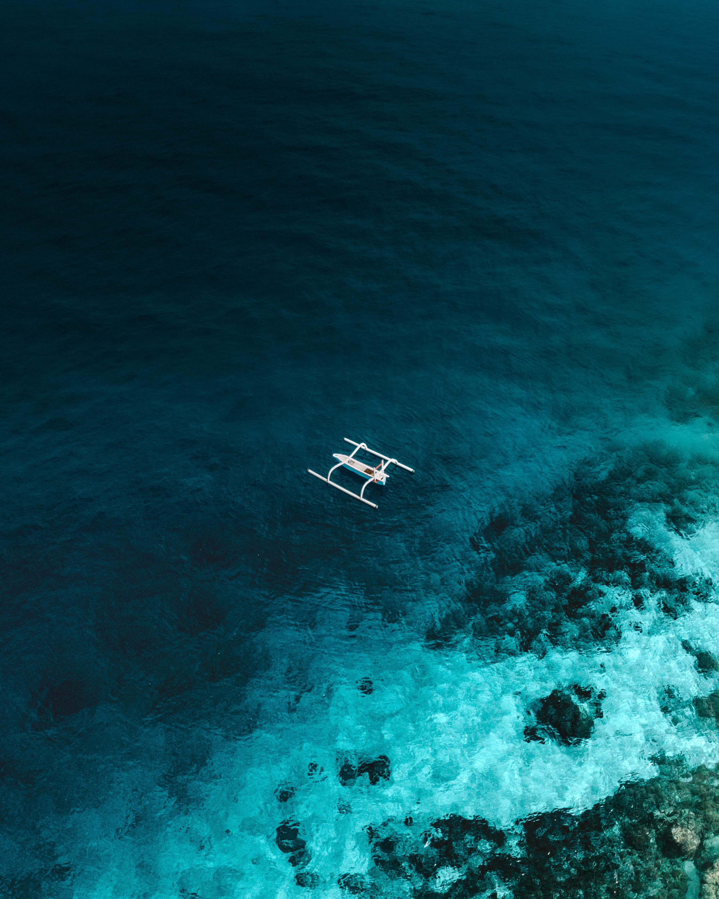

JalanJalan adalah travel agent terdepan di Indonesia yang telah berdiri sejak 1982. Dengan kantor - kantor cabang yang tersebar di Indonesia, kami hadir untuk menjadi pintu gerbang Anda menuju destinasi yang luar biasa. JalanJalan memiliki berbagai layanan perjalanan wisata yang terpadu seperti Reservasi Hotel, Tiket penerbangan domestik dan internasional, tour, cruise sampai dokumen perjalanan. Selama hampir 40 tahun JalanJalan telah menjadi sahabat dan mitra Anda dalam menjelajahi dunia, dengan itu juga kami mencetak pencapaian yang luar biasa.
MAU KEMANA NIH?




